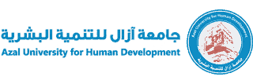

درگاه دانش آزاد آزال
·
العربية
·
English
·
فارسی

خانه
پژوهشگران
پژوهشها
پروژهها
AUHD RESEARCHERS
Dr. Taha Abdulaziz Al-Nasiri
علوم آزمایشگاهی پزشکی
دانشگاه آزال برای توسعه انسانی
منبع علمی
آثار و انتشارات علمی
فهرست آثار علمی
فهرست پژوهشگران
پژوهشها